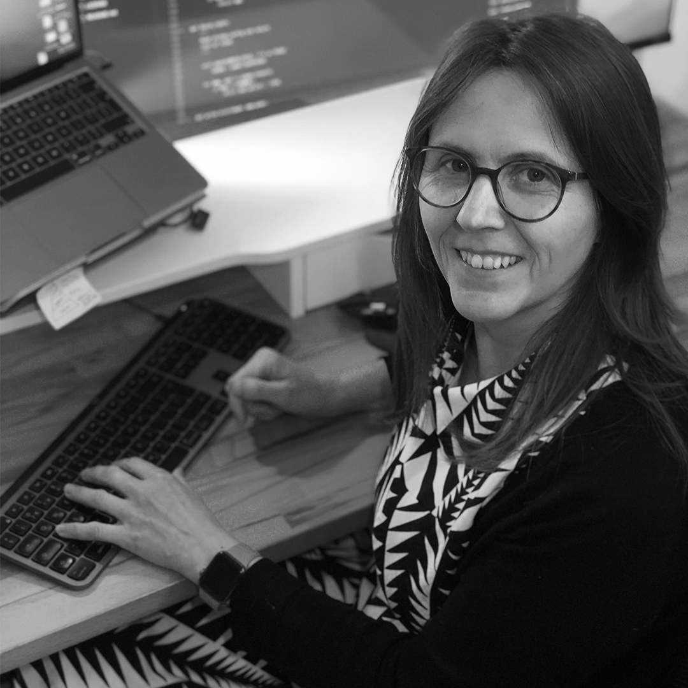

class: center, middle, titlepage ### MON01: *Welcome & Introduction / Technical Assessment* --- class: contentpage ### **Joanna White** Notes about Joanna White (British Film Institute). .left[] --- class: contentpage ### **Paul Duchesne** Notes about Paul Duchesne (National Film and Sound Archive). .left[<img src="../img/paul.png" height="400">] --- class: contentpage ### **General** - We are both from film archives, so you may notice a general skew in that direction. - You are strongly encouraged to code alongside, and run as much yourself as possible. - Also consider trying to apply this to your own files! Some of the content is specific to archival tools and/or files (e.g. RAWcooked), but a lot of it can be used more generally. --- class: contentpage ### **Software Checking** Check software is all installed correctly! Visual Studio Code Git FFmpeg Python3 MediaInfo RAWcooked MediaConch QcTools Java Whisper DCP-o-matic Ollama GitHub account also required